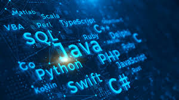
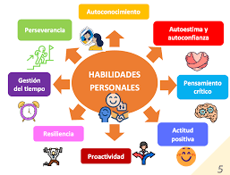

Primer Cuatrimestre:
Para empezar hay que comentar que este grado se centra en dos grandes bloques:
Tecnicos
En este bloque se ven cosas mas tecnicas como la programación, las matematicas y en mi caso tambien ciertas asignaturas sobre la ciberseguridad. Algunas de estas asignaturas son:
Fundamentos:
En esta asignatura vemos sobre la historia de la computacion como por ejemplos los primeros ordenadores, ademas empezamos el aprendizaje del uso de GitHub, y pogramar en html y css.
Introducción a la programación:
En esta empezamos a aprender la logica del ordenador para entender como programar y aprendemos el lenguaje C.
Personales
En cambio en este lado se ven cosas no tan tecnicas pero tambien importantes como el saber comunicarse y gestionar el tiempo entre otros.
Lógica y Pensamiento Crítico:
En esta asignatura trabajamos principalmente en que no tenemos que creernos todo lo que nos cuentan si no a traves de la logica y el pensamiento critico valorar si tiene veracidad o no.
Gestion del Conocimiento y Habilidades de las Personas:
En cambio esta se basa más en la comunicación verbal y no verbal y hacer un proyecto sobre lo que quieras para que nos vayamos haciendo en este mundillo de la organización
Objetivos de la carrera:
Esta carrera tiene la finalidad de una formación científica, tecnológica y la preparación para el ejercicio profesional en el desarrollo y aplicación de las Tecnologías de la Información y las Comunicaciones en el ámbito de la Informática junto con la capacidad de resolver los problemas.